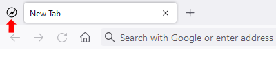
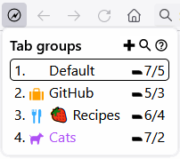
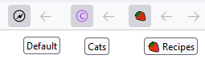
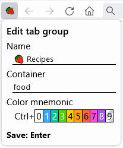
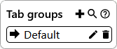
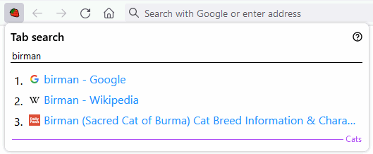

Lightning Tab Groups User Manual
A lightweight tab group manager made for the keyboard
How it works
Lightning Tab Groups keeps your tabs in named groups and shows only the tabs of the current group. You switch between groups from the popup window of the add-on, mostly with keyboard shortcuts that work while the popup is open.
Everything the add-on does is also available through the tab-group command of
iShell.
Getting started
Use the Customize Toolbar… menu of Firefox to place the toolbar button of the add-on at the beginning of the tab strip:

Lightning Tab Groups works best when Open previous windows and tabs is turned on in the Firefox settings.
The popup window

The popup window lists your tab groups and accepts the keyboard shortcuts for working with them. Open it by clicking the toolbar button or by pressing Alt+G. The key combination can be changed in Firefox.
Each row shows the access key of the group, the icon of its container (if any), its name, and the number of its tabs: in total and in the current window.
Groups are listed in the order they were created. Press Ctrl+↑ or Ctrl+↓ to move the selected group up or down, or turn on Sort alphabetically in the settings.
Tab group mnemonics

The toolbar button shows the mnemonic of the current group: the first letter of its name in the color you assigned to it. A glance at the button tells you which group is active.
To use a pictogram instead, start the group name with an emoji and give the group the transparent color (Ctrl+9, see below).
Creating, editing and deleting groups

- Create: open the popup and press Insert. In the form, enter the name, the full name of a Firefox container if you want one, and pick the mnemonic color with Ctrl+0…9. Press Enter to save.
- Edit: select a group with the arrow keys and press Ctrl+Insert.
- Delete: select a group and press Delete. This also closes its tabs. Press Ctrl+Z to bring the group back.
- Close tabs only: Ctrl+Delete closes all tabs of the selected group but keeps the group.
With mouse controls turned on, you can also use the buttons at the top of the popup and the edit and delete buttons that appear when you hover over a group. Click the pointer icon at the top of the popup to turn mouse controls on or off.
Switching between groups
- Click the group in the popup.
- Select it with the arrow keys and press Enter.
- Press its access key while the popup is open. For example, to switch to the Recipes group from the picture above, press Alt+G and then 3.
Showing the tabs of a group
Select a group and press → to list its tabs. Press = to filter them by title or address, and ← to go back to the list of groups.
Moving tabs between groups
You can move one tab or several at once. To select several tabs in Firefox, hold Ctrl and click each tab you want, or click the first tab and Shift+click the last one to select the whole range.

Click the arrow next to a group to move the active tab there. Hold Shift while clicking to move the selected tabs, or all tabs of the window. Hold Ctrl to switch to that group as well.
With the keyboard, open the popup, select the destination group, and press:
- Home to move the active tab, or the tabs selected with Ctrl+click.
- End to move all tabs, or the tabs selected with Ctrl+click.
- Ctrl+Home or Ctrl+End to do the same and switch to the destination group.
- Shift+End to move the selected or all tabs to a new browser window.
Copying and pasting groups
You can copy tab groups between browsers where Lightning Tab Groups is installed. In the popup, press PageUp to copy the selected group, or Shift+PageUp to copy all groups. Press PageDown to paste groups from the clipboard.
Searching for tabs

To search all groups, open the popup, press =, and type what you are looking for. Select a result with the arrow keys and press Enter to go to that tab, or press Ctrl+its access key.
Settings
- Right-click the toolbar button of the add-on and choose Settings.
- Or open the settings of Lightning Tab Groups from the add-ons page of Firefox.
There you can choose the color theme, highlight the selected group, switch the mnemonic style, sort groups, and show or hide the mouse controls. All changes are saved immediately.